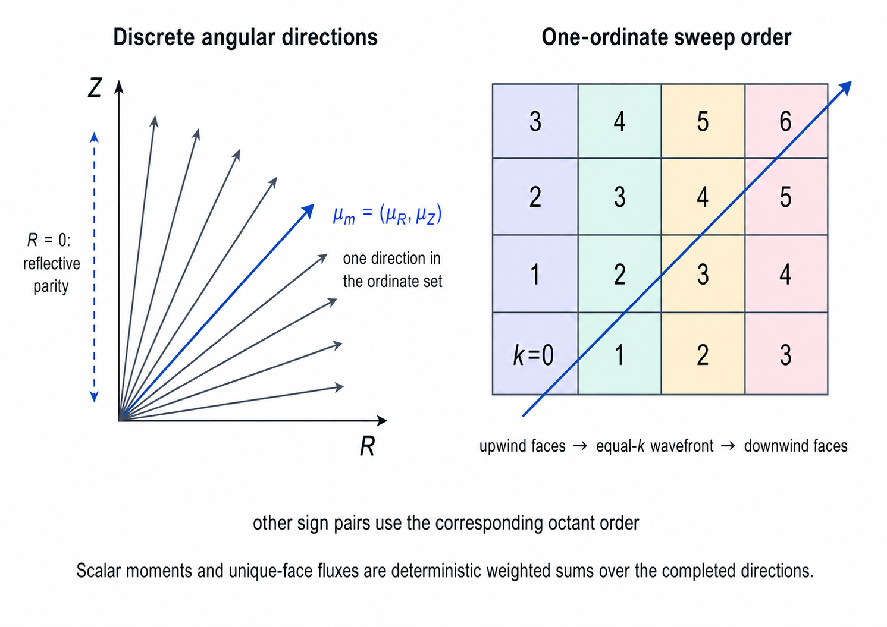

輻射輸送: SN reference
TENRYU の \(S_N\) ソルバは、1D — 既定は球対称で、Mesh.geometry_1d の平面・円筒測度にも対応する（円筒は \(n=2L^2\) 本の積求積）— と 2D 軸対称 RZ を対象とする決定論的な離散座標法の輻射輸送である。光子エネルギー群ごとに有限個の方向を追跡し、方向別の放射強度からセルのエネルギーと面の流束を構成する。光学的に薄い領域、自由飛行、強い異方性が効く場面で 多群 FLD を補完するが、方向数に比例する掃引と源反復のコストを要する。
物理機構
FLD は角度分布を、スカラーのエネルギーとその流束クロージャへ縮約する。しかし、透明な領域を光子が自由飛行する場合、影ができる場合、あるいは焼き抜け・空隙・直接照射のように離散的な方向から光が到来する場合には、角度分布そのものが解の一部になる。離散座標法は、連続な方向の球面を求積点の集合 \(\{\boldsymbol\mu_m,w_m\}\) で置き換え、固定した方向ごとに輸送方程式を解き、その重み付き和から輻射のモーメントを再構成する。
ひとつの方向に沿う定常の輸送・吸収演算子は 1 階の移流方程式なので、各セルは上流側にしか依存せず、上流から下流への 1 回の走査、すなわち掃引でメッシュ全体を解ける。RZ 幾何では、符号の各組合せが対角 \(k=i+j\) の波面として進む。TENRYU の実運用スキームである線形特性法は、セル内で一定とした源に対する指数減衰を特性線上で厳密に積分する。古典的なダイヤモンド差分はセル平均を入口面と出口面の算術平均とみなす外挿なので、光学的に厚いセルでは負の強度を作り得るが、特性線上の状態は非負の源に対して必ず正である。
衝突は方向どうしを結合させる。離散座標法では等方的な源の項が角度積分後のスカラー束を通じて掃引どうしを結合するため、掃引を源反復で包む。散乱比（全消衰に占める散乱の割合）が 1 に近づくほど源反復の収束は遅くなり、任意選択の拡散合成加速（DSA）がその遅い誤差モードを加速する。TENRYU v1.0 では物理散乱の不透明度はゼロ（\(\sigma_{s,g}=0\) — 数値基盤参照）なので、この機構が担うのは等方に再放出される源と、曲がった幾何での角度再配分であり、将来の物理散乱テーブルの受け皿でもある。さらに外側では、ピカール反復が \(T_e\)、プランク重み、不透明度を更新し、セル局所の能動集合ニュートン法 — 非負制約に掛かった群を特定して境界に固定し、残りを解く方式 — で物質との結合を閉じる。FLD と異なり、純粋な sn_transport には Fleck の実効散乱がなく、\(f=1\) として素の \(\sigma^{PA}\)、\(\sigma^{PE}\) を非線形のエネルギー収支に入れる。
方向には記憶もある。TENRYU は前ステップの方向別強度を sn_psi_prev に保持する。スカラーのエネルギーから毎ステップ等方に再構成すると、自由飛行が人為的な拡散に変わってしまうためである。この忠実さの代価として、計算量はおおむねセル数×群数×方向数×反復数に比例し、角度と面の作業領域も必要になる。FLD と同じ静止媒質近似であり、物質運動による \(O(v/c)\) の項は含まない（この適用範囲はリポジトリの docs/NUMERICS.md §1.2 に記録されている）。
角度離散化と輸送モーメント
離散座標法は角度空間を有限集合 \(\{\boldsymbol\mu_m,w_m\}\) に置き換える。1D 球対称では偶数次数のガウス–ルジャンドル集合を使い、既定は \(S_{16}\) である。\(S_8\) は掃引の計算量を減らす性能上の選択肢だが、角度誤差を明示するため設定時に警告を出し、S8/S16 の収束検査の対象になる。2D RZ では \(\boldsymbol\mu_m=(\mu_{R,m},\mu_{Z,m})\) の直積型 level-symmetric 求積を使い、方位角の重みを軸対称の求解に折り込む。
角度掃引で得たセル平均の強度から、スカラー束と輻射エネルギー密度を
$$ \phi_{c,g}=\sum_m w_m\psi_{c,g,m}, \qquad E_{c,g}=\frac{\phi_{c,g}}{c} $$として求める。面の状態も同じ方向集合から縮約するため、R 面または Z 面 \(f\) 上の符号付き流束は
$$ F^{SN}_{f,g}=\sum_m w_m\,\mu^{face}_m\,\psi^{face}_{m,g} $$である。符号の大域的な規約は、R 面では \(+R\)、Z 面では \(+Z\) 向きを正とする。セルのモーメントと面のモーメントを別々の近似から作らないことが、輸送の更新と逸出の台帳を同じ離散輸送に結び付ける。
- \(\{\boldsymbol\mu_m,w_m\}\) は角度求積の方向余弦と積分重みである。1D 球対称では偶数次数のガウス–ルジャンドル集合を使い、実運用の既定は \(S_{16}\) である。2D RZ では直積型の level-symmetric 集合を使う。重みは角度測度に規格化されており、1D のガウス–ルジャンドル集合の総和は \(\int_{-1}^{1}d\mu=2\)（方位角の積分は \(\psi\) に畳み込み）なので、\(\sum_{\mu_m>0}w_m\mu_m=1/2\) が成り立つ — この半範囲モーメントが、下の Marshak 規格化の係数 2 の根拠である。
- \(\phi_{c,g}=\sum_mw_m\psi_{c,g,m}\) は 0 次の角度モーメント、すなわちスカラー束であり、\(E_{c,g}=\phi_{c,g}/c\) がセルに保持する群ごとの輻射エネルギー密度である。
- \(F^{SN}_{f,g}\) は面上の 1 次角度モーメントである。符号はセルの外向きではなく大域的な規約に従うため、面ごとに一意なひとつの値が、隣り合う 2 セルの発散へ符号を反転して入る。
- ドナー \(\theta\) 制限は、この面モーメントに対する送出の制限である。上流セルがそのステップ中に使える輻射エネルギーを超えて送り出す場合にかぎり、外向きの面流束を縮小する。
- \(\psi_{\rm in}\) は境界に与える、内向き半球の強度である。2D の Marshak 面では \(\psi_{{\rm in},m}=2F_{\rm inc}\) とし、離散化した半球の 1 次モーメントが、指定した入射流束に一致するようにする：\(\sum_{\mu_m>0}w_m\mu_m=1/2\) なので、モーメント \(\sum_{\mu_m>0}w_m\mu_m\,(2F_{\rm inc})=F_{\rm inc}\) である。

RZ メッシュ上の掃引と有限体積更新
2D RZ の源反復は、群と方向ごとに構造格子を上流から下流へ掃引する。実運用の経路は 4 つの象限を順序付けて起動し、各起動の内部では R/Z の依存関係を保つ波面順序を使う。方向別のセル平均と面の状態は方向ごとの専用作業領域に保持し、方向番号の昇順で決定論的に縮約する。これにより、方向についての並列性を活かしながら加算順序を固定できる。
既定の spatial_scheme="linear_characteristic" は、セル内で一定とした源に対し、特性線上の指数減衰を積分する。旧来の diamond_difference は回帰確認用に残した非推奨のオプションである。線形特性法の掃引は、非負の源から必ず正の出射状態を構成し、光学的に薄い極限での有限体積的な源のスケーリングを保ちながら、ダイヤモンド差分の外挿による出射を置き換える。
各セル \(c=(i,j)\) の輸送のみによる状態は、面ごとに一意な流束の発散から直接作る。
$$ E^{*,flux}_{i,j,g}=E^n_{i,j,g}-\Delta t\, \frac{A^R_+F^R_+-A^R_-F^R_-+A^Z_+F^Z_+-A^Z_-F^Z_-}{V_{i,j}}. $$ここで \(A^R=2\pi r\Delta z\)、\(A^Z=\pi(r_+^2-r_-^2)\) である。軸上の面は幾何的な面積が 0 であり、配列も発散を評価する前に明示的に 0 で初期化する。\(E^{*,flux}\) 自体には下限を課さず、出射が蓄えられたエネルギーを超えて運び出さないよう、面流束にドナー \(\theta\) 制限を適用する。ひとつの共有面には制限後の流束がひとつしかないため、隣り合うセルへの寄与はちょうど相殺する。
同時刻の衝突・物質閉包・反復
角度求積と依存順序を構築する。 1D では偶数次数のガウス–ルジャンドル集合を、RZ では直積型 level-symmetric 集合と反射パリティの対応表を作る。RZ ではさらに、符号の組ごとに順序付けた 4 つの起動と、方向ごとの上流依存を表す波面を構成する。方向番号は、後段の縮約における固定順序も兼ねる。
群と方向ごとに掃引する。 方向ごとの後退オイラー式へ、
sn_psi_prevに保持した過渡源、輸送項、同時刻の消衰、1 反復遅れの等方散乱、物質からの放出をまとめて入れる。実運用の線形特性経路では、各上流状態から一定源の指数減衰を積分する。セル平均と下流側の面の状態は方向ごとの専用作業領域へ書き込み、方向間で加算が競合しないようにする。角度モーメントを決定論的に縮約する。 全方向の掃引を終えたあと、専用作業領域を方向番号の昇順で加算し、\(\phi\)、\(P_{rr}\)（角度 2 次モーメントの rr 成分 — 診断用に保持する輻射圧モーメント）、R/Z の面ごとに一意な流束を作る。方向レベルの並列性を使いながら、従来の逐次方向での加算順序をビット単位で保つ。
保存型の輸送を適用する。 面ごとに一意なモーメントを、上の有限体積の流束発散式へ入れる。2 段階のドナー \(\theta\) 構成では、第 1 段で各供給セルを蓄積エネルギーによって制限し、第 2 段では、上流の供給セルが第 1 段で実際に渡せる流入分だけを利用可能量へ加える。最後に、各面流束を上流の供給セルの係数で 1 回だけ縮小する。輸送だけの状態 \(E_g^{*,flux}\) には下限を課さず、制限後の流束は面ごとに 1 値のままなので、内部面の寄与は相殺する。
同時刻の散乱を収束させる。 物質状態を固定したとき、内側反復の未知量はスカラー束 \(\phi_{c,g}\) である：等方源は \(\phi\) を必要とする一方、\(\phi\) はその源で掃引した後にしか分からない。源反復はこの循環を純粋な代入で閉じる — 各回は 1 反復遅れの源に対して全方向を厳密に解き、新しい \(\phi\) から源を作り直す — そして反復間のスカラー束の相対変化が
inner_tol（既定1e-6）を満たしたら停止する。群ごとの拡散合成加速（DSA）は任意であり、高次の面流束を置き換えることなく、源反復の誤差を加速的に減らす。-
外側ピカール反復で物質を閉じる。 純粋な
$$ F(T_e)=\rho\frac{e_e(\rho,T_e)-e_e(\rho,T_e^n)}{\Delta t} -\sum_g c\sigma^{PA}_gE_g +\sum_g c\sigma^{PE}_g a_{eV}T_e^4b_g(T_e)=0 $$sn_transportでは \(f=1\) とし、吸収と沈着には素の \(\sigma^{PA}_g\)、放出には \(\sigma^{PE}_g\) を使って、セル局所の能動集合による収支を解く。ここで \(a_{\rm eV}\) は eV 単位系の輻射定数である。式中の \(E_g\) は閉包の対象となる群エネルギーを模式的に表している。閉包への入力は輸送直後・結合前の \(E_g^*\)（上の \(E^{*,flux}_g\)。下限は課さない）で、閉包が返すのは温度 \(T_e\) と整合した非負の群エネルギー \(E_g^+(T_e)\) である。正値性はこの最終的な \(E_g^+(T_e)\) にのみ適用し、残差の評価と書き戻しには同一の能動集合の状態を使う。更新した \(T_e\)、\(b_g\)、不透明度を掃引へ戻し、
$$ r_k=\max_c\frac{|T^{k+1}_{e,c}-T^k_{e,c}|} {\max(T^{k+1}_{e,c},T_{floor})} $$を \(r_{\rm tol}=\max(\texttt{outer_tol},10\,\texttt{outer_tol_hydro_error_scale})\)（既定値は \(10^{-4}\) と \(10^{-5}\)）と比較する。
max_outer_iterationsの既定値は 20 である。つまり外側反復の未知量は \(T_e\)（それに乗って \(b_g\) と不透明度も動く）であり、内側と同じく緩和なしのピカール代入である。各外側反復は同じ段入口状態 — \(\psi^n\)（sn_psi_prev）による過渡源と、\(e_e(\rho,T_e^n)\) に係留した物質収支 — から輸送を解き直すため、前の結果へ積み増すのではなく反復値を置き換える。\(r_{\rm tol}\) に達しないまま上限を使い切った場合は最終反復の結果を採用し、sn_convergedは false のまま残る。2D RZ では、内側残差の停滞判定が 3 回連続で \(|r_k^{\rm inner}-r_{k-1}^{\rm inner}|\le10^{-6}\max(|r_k^{\rm inner}|,|r_{k-1}^{\rm inner}|,10^{-300})\) を満たした時点で、同じ入力に対する冗長な掃引を打ち切る。この打ち切りはsn_outer_stagnated=trueとして記録し、inner_tolに達していなければsn_converged=falseのままにする — これらは実行ログの警告とドライバ診断に現れる内部ソルバ状態のフラグであり、namelist のキーでも出力データセットでもない。 輸送の台帳を閉じる。 収束した場から
rad_dep\(=c\sigma^{PA}E_gV\Delta t\)、rad_emit\(=c\sigma^{PE}a_{\rm eV}T_e^4b_gV\Delta t\) を作る。境界からの逸出は、輸送の更新が使ったものと同じ \(\theta\) 制限済みの面配列から積分し、Marshak の流入は別に対応付ける。共有面が 1 値なので内部の発散は打ち消し合い、輻射と物質のやり取りと、離散化した境界積分だけが残る。
境界条件と FLD との使い分け
\(R=0\) の軸では、方向の反射パリティを使う。外側 R 面は内向き強度を 0 とする真空境界が既定で、2D の閉じた円筒ベンチマークでは反射も選べる。Z の下面・上面は、真空、反射、Marshak を面ごとに選択できる。2D の Marshak 境界では、計算領域へ入る方向に定常のグレイ流束 \(F_{inc}\) を \(\psi_{in,m}=2F_{inc}\) として与え、求積の半球モーメントが指定した流束に一致するよう規格化する。境界面の出射・入射の角度状態から得た離散的な正味流束が、有限体積の更新と逸出の集計の双方に使われる。
\(S_N\) を選ぶ主な理由は、透明な空隙、自由飛行する波面、方向性の強い照射、影やレイ効果のように、強度の方向分布そのものが解に影響する場合である。FLD は角度分布をスカラーのエネルギーと制限付き拡散流束へ閉じるため、光学的に厚くほぼ等方な領域では一般に安価で頑健である。一方 \(S_N\) の計算量はおおむねセル数×群数×方向数×反復数に比例し、角度の状態と面の作業領域も必要である。\(N\) を小さくすれば安価になるが、レイ効果と角度の打ち切り誤差が増えるため、S8/S16/S32 の段階列で着目量の収束を確認する。
主要な namelist キー
以下は Radiation の \(S_N\) 設定から選んだ項目である。完全なスキーマと組合せの制約は namelist リファレンスを参照のこと。
| キー | 既定値 / 例 | 用途 |
|---|---|---|
Radiation.mode | "sn_transport" | このページで述べる決定論的な離散座標ソルバを選択する。 |
Radiation.groups | 1 | FLD と共有する光子エネルギー群の数 \(G\)。 |
Radiation.group_bounds_eV | 長さ \(G+1\) の配列 | FLD と共有する eV 単位の群境界。 |
Radiation.sn_transport.n_angles | 16 | 離散方向の数（角度求積の次数）。掃引の計算量はほぼ線形に増える。 |
Radiation.sn_transport.spatial_scheme | "linear_characteristic" | 実運用の線形特性掃引。"diamond_difference" は回帰確認用である。 |
Radiation.sn_transport.max_outer_iterations | 20 | 物質・不透明度のピカール反復の上限回数。 |
Radiation.sn_transport.outer_tol | 1e-4 | 電子温度に対するピカール残差の基本許容値。 |
Radiation.sn_transport.inner_tol | 1e-6 | スカラー束の源反復に対する許容値。 |
Radiation.sn_transport.boundary.inner_r / outer_r | "reflect_parity" / "vacuum" | 軸のパリティと、外側 R 面の種別。 |
Radiation.sn_transport.boundary.z / z_bottom / z_top | "vacuum" | 2D RZ における Z 境界（共通指定または面別指定）。reflect、marshak も選べる。 |
検証
test_r2_quadrature_sweepは 2D RZ で 8/16/32 方向の段階列を実行し、32 方向の参照解へ向かう輻射エネルギーの単調なコーシー収束を判定する。test_sn_1d_s8_vs_s16_convergenceは GXII 相当の 1D 分布で、\(S_8\) と \(S_{16}\) のあいだの最大相対エネルギー差に \(<0.05\) を要求し、方向数を減らす性能上の選択肢に精度面の下限を課す。test_sn_face_flux_conservationとtest_sn_2d_rz_step_total_energy_conservationは、面流束が 1 値であること、有限体積の発散、輻射と物質のステップ収支が閉じることを検査する。2D のステップ全エネルギー恒等式は \(10^{-10}\) で判定する。test_sn_2d_rz_bug25_escape_ledgerは、境界からの逸出と、離散化した境界面積分の一致を相対 \(10^{-12}\) で要求する。- I6 の恒久的な G1 検査
test_sn_2d_rz_mg_grey_collapseは、グレイ計算に対する \(\sum_gE_g\) と \(\sum_gF_{z,g}\) の双方に相対 L2 差 \(\varepsilon_2\le10^{-6}\) を要求する。\(G=8\)、実運用のinner_tol=1e-6では、エネルギーで \(4.5\times10^{-9}\)、\(F_z\) で \(3.0\times10^{-7}\) を実測した。inner_tolを \(10^{-12}\) にするとそれぞれ \(6.4\times10^{-15}\)、\(2.9\times10^{-13}\) まで戻り、機構の閉包に対する上限 \(10^{-12}\) を満たしている。連成条件での後続認証（I6 G2）がこの検査を拡張する。 - R2 の Marshak 分布の比較は、独立な参照解に対して 0.15 を判定基準とし、実運用の \(S_{16}\) デッキでの実測値は \(7.94\times10^{-3}\) である。
参考文献
- J. A. Fleck, Jr. and J. D. Cummings, "An Implicit Monte Carlo Scheme for Calculating Time and Frequency Dependent Nonlinear Radiation Transport," J. Comput. Phys. 8, 313–342 (1971). doi:10.1016/0021-9991(71)90015-5
- M. L. Adams and E. W. Larsen, "Fast Iterative Methods for Discrete-Ordinates Particle Transport Calculations," Prog. Nucl. Energy 40, 3–159 (2002). doi:10.1016/S0149-1970(01)00023-3
- E. W. Larsen, "Unconditionally Stable Diffusion-Synthetic Acceleration Methods for the Slab Geometry Discrete Ordinates Equations. Part I: Theory," Nucl. Sci. Eng. 82, 47–63 (1982). doi:10.13182/NSE82-1
- J. E. Morel and G. R. Montry, "Analysis and Elimination of the Discrete-Ordinates Flux Dip," Transp. Theory Stat. Phys. 13, 615–633 (1984). doi:10.1080/00411458408211661
- B. G. Carlson, "Solution of the Transport Equation by SN Approximations," Los Alamos Scientific Laboratory Report LA-1891 (1955). doi:10.2172/4376236